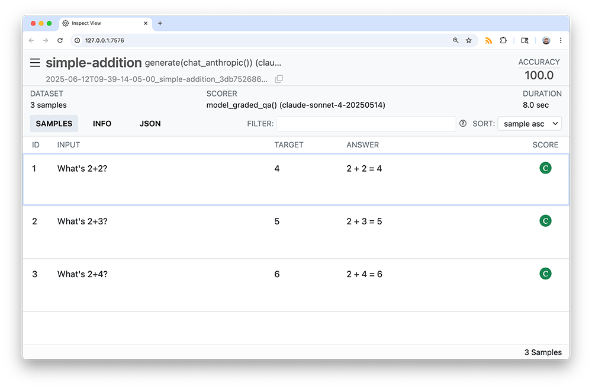

vitals is a framework for large language model evaluation in R. It’s specifically aimed at ellmer users who want to measure the effectiveness of their LLM products like custom chat apps and querychat apps. You can use it to:
- Measure whether changes in your prompts or additions of new tools improve performance in your LLM product
- Compare how different models affect performance, cost, and/or latency of your LLM product
- Surface problematic behaviors in your LLM product
The package is an R port of the widely adopted Python framework Inspect. While the package doesn’t integrate with Inspect directly, it allows users to interface with the Inspect log viewer and provides an on-ramp to transition to Inspect if need be by writing evaluation logs to the same file format.
Installation
Install the vitals package from CRAN with:
install.packages("vitals")You can install the developmental version of vitals using:
pak::pak("tidyverse/vitals")Example
LLM evaluation with vitals is composed of two main steps.
- First, create an evaluation task with the
Task$new()method.
simple_addition <- tibble(
input = c("What's 2+2?", "What's 2+3?", "What's 2+4?"),
target = c("4", "5", "6")
)
tsk <- Task$new(
dataset = simple_addition,
solver = generate(chat_anthropic(model = "claude-sonnet-4-20250514")),
scorer = model_graded_qa()
)Tasks are composed of three main components:
-
Datasets are a data frame with, minimally, columns
inputandtarget.inputrepresents some question or problem, andtargetgives the target response. -
Solvers are functions that take
inputand return some value approximatingtarget, likely wrapping ellmer chats.generate()is the simplest scorer in vitals, and just passes theinputto the chat’s$chat()method, returning its result as-is. -
Scorers juxtapose the solvers’ output with
target, evaluating how well the solver solved theinput.
- Evaluate the task.
tsk$eval()$eval() will run the solver, run the scorer, and then situate the results in a persistent log file that can be explored interactively with the Inspect log viewer.

Any arguments to the solver or scorer can be passed to $eval(), allowing for straightforward parameterization of tasks. For example, if I wanted to evaluate chat_openai() on this task rather than chat_anthropic(), I could write:
tsk_openai <- tsk$clone()
tsk_openai$eval(solver_chat = chat_openai(model = "gpt-4.1"))For an applied example, see the “Getting started with vitals” vignette at vignette("vitals", package = "vitals").